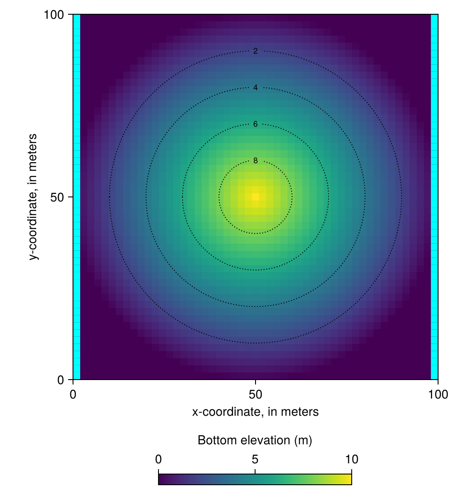
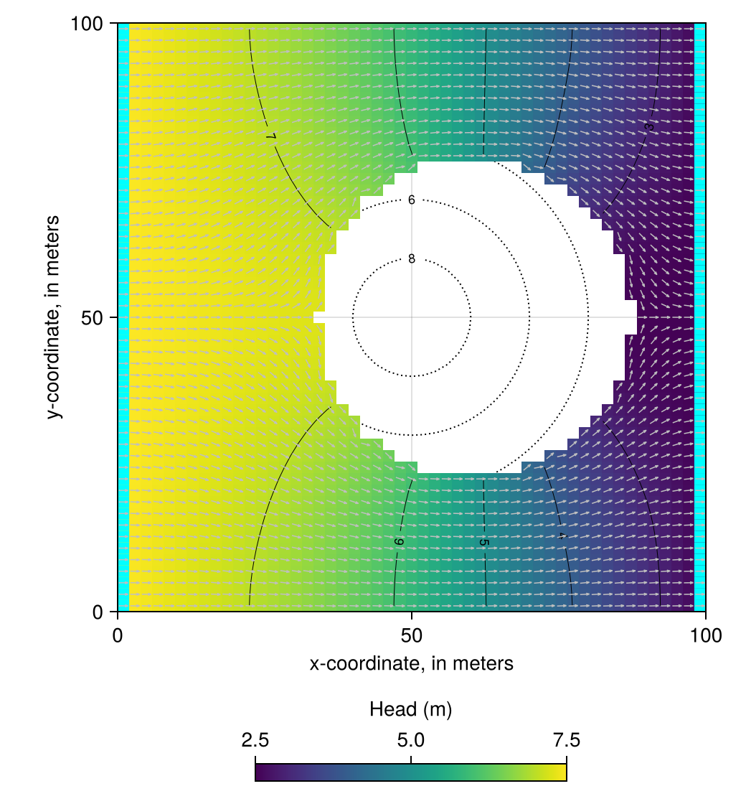
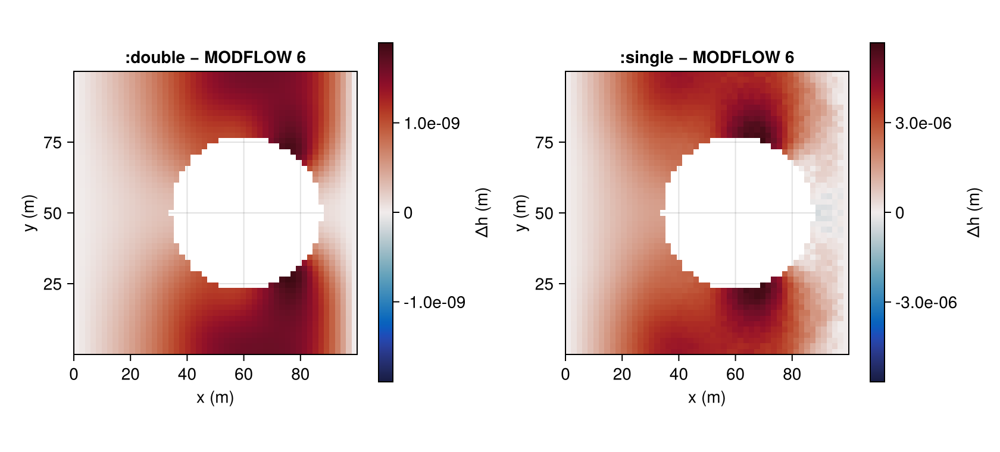
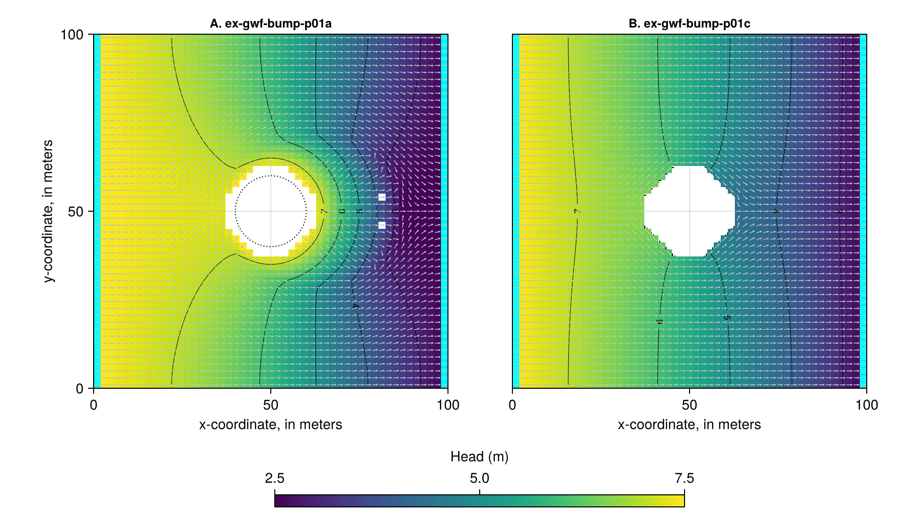

Flow diversion around a high bottom
Unconfined flow in a square aquifer of 100 m × 100 m (one layer of 51 × 51 cells) whose bottom rises to a bump in the middle, higher than the water table, so that the cells on the bump go dry and the flow goes around it. Constant heads of 7.5 m on the west edge and 2.5 m on the east edge drive the flow. Units are metres and days.
The MODFLOW 6 example ex-gwf-bump solves the problem three ways: with the Newton–Raphson formulation (-p01a), with the standard formulation and rewetting of dry cells (-p01b), and with Newton–Raphson on a cylindrical bump (-p01c). This page runs all three, first ex-gwf-bump-p01b.
Input and the MODFLOW 6 run
ExampleTools (docs/ExampleTools.jl in the repository) takes the input from the released mf6examples.zip, sets the tight closures of the parity tests in the IMS file, and runs MODFLOW 6.8.2.
using ModflowGPU, CairoMakie
mf6 = example_run("ex-gwf-bump-p01b")
mf6.mode, mf6.mf6_time("tight", 0.385833591)The ModflowGPU run
In :double and in :single precision on the CPU, with the default options.
runs = Dict(p => run_modflowgpu(mf6.dir, p) for p in (:double, :single))
r = runs[:double].result
r.convergedtrueThe model
The bottom elevation with contours every 2 m and the constant-head cells (cyan), as in the MF6 example.
g = read_dis_grid(mf6.dir)
bot = g.botm[:, :, 1]
chd = budget_cells(g, r.budget_file, "CHD")
fig = Figure(; size = (520, 560))
ax = Axis(fig[1, 1]; aspect = DataAspect(), xlabel = "x-coordinate, in meters", ylabel = "y-coordinate, in meters")
hm = map_heatmap!(ax, g, bot; colorrange = (0, 10))
map_cells!(ax, g, chd; color = :cyan)
map_contour!(ax, g, bot; levels = 2:2:8, color = :black, linestyle = :dot, linewidth = 1, labels = true, labelsize = 9)
limits!(ax, 0, 100, 0, 100)
Colorbar(fig[2, 1], hm; vertical = false, label = "Bottom elevation (m)", width = Relative(0.5))
save_figure(fig, "ex-gwf-bump-grid")
Heads
The heads with contours every metre (from 3 m to 7 m), the bottom contours, the normalized specific discharge (computed from ModflowGPU's FLOW-JA-FACE record as MODFLOW 6 computes it for SAVE_SPECIFIC_DISCHARGE) and the constant-head cells. Dry cells (white) are those whose head is at or below the bottom, as in the MF6 figure.
h = read_head(open_head_file(r.head_file), 1)
flowja = vec(only(read_budget(open_budget_file(r.budget_file); text = "FLOW-JA-FACE")))
qx, qy = specific_discharge(g, flowja, h)
hl = layer_values(h, 1)
hl[hl .<= bot] .= NaN
fig = Figure(; size = (520, 560))
ax = Axis(fig[1, 1]; aspect = DataAspect(), xlabel = "x-coordinate, in meters", ylabel = "y-coordinate, in meters")
map_contour!(ax, g, bot; levels = 2:2:8, color = :black, linestyle = :dot, linewidth = 1, labels = true, labelsize = 9)
hm = map_heatmap!(ax, g, hl; colorrange = (2.5, 7.5))
map_contour!(ax, g, hl; levels = 3:1:7, color = :black, linewidth = 0.5, labels = true, labelsize = 9)
map_cells!(ax, g, chd; color = :cyan)
map_vectors!(ax, g, qx[:, :, 1], qy[:, :, 1])
limits!(ax, 0, 100, 0, 100)
Colorbar(fig[2, 1], hm; vertical = false, label = "Head (m)", width = Relative(0.5))
save_figure(fig, "ex-gwf-bump-head")
Comparison with MODFLOW 6
The head differences between ModflowGPU and MODFLOW 6, in both precisions (dry cells left out).
h6 = read_head(open_head_file(only(filter(endswith(".hds"), readdir(mf6.dir; join = true)))), 1)
d = [":$p − MODFLOW 6" => mask_inactive(read_head(open_head_file(runs[p].result.head_file), 1)) .- mask_inactive(h6) for p in (:double, :single)]
save_figure(difference_map(g, d; unit = "m", xlabel = "x (m)", ylabel = "y (m)"), "ex-gwf-bump-difference")
The largest head and budget differences, next to the values of the parity table, and the wall times (CPU: this build, including compilation for the first run of the session; GPU: the parity table, AMD Radeon RX 7800 XT).
stats = Dict(p => (; cmp = compare_with_mf6(mf6.dir, runs[p]), runs[p].time) for p in (:double, :single))
comparison_table("ex-gwf-bump-p01b", stats)| Preset | max |Δh| (m), this build | max |Δh| (m), parity table | Budget, this build | Budget, parity table | CPU time, this build (s) | GPU time, parity table (s) |
|---|---|---|---|---|---|---|
:double | 1.9e-09 | 1.9e-09 | 6.7e-11 | 6.7e-11 | 1.34 | 0.07 |
:single | 5.7e-06 | 5.7e-06 | 3.6e-07 | 3.6e-07 | 1.21 | 0.10 |
Budget: the largest difference of a budget-file flow or a listing-table rate, relative to the total inflow of its time step.
The Newton–Raphson formulation (-p01a and -p01c)
ex-gwf-bump-p01a solves the same problem with NEWTON UNDER_RELAXATION instead of rewetting; ex-gwf-bump-p01c with a cylindrical bump whose top is flat. With Newton–Raphson no cell is taken out of the model: a cell on the bump keeps a head below its bottom, has no saturated thickness and passes no water on (white here, as the dry cells above), and the flow goes around it.
newton = Dict(name => example_run(name) for name in ("ex-gwf-bump-p01a", "ex-gwf-bump-p01c"))
newton_runs = Dict(name => Dict(p => run_modflowgpu(newton[name].dir, p) for p in (:double, :single)) for name in keys(newton))
fig = Figure(; size = (900, 520))
for (i, name) in enumerate(("ex-gwf-bump-p01a", "ex-gwf-bump-p01c"))
local gn = read_dis_grid(newton[name].dir)
local botn = gn.botm[:, :, 1]
local rn = newton_runs[name][:double].result
local hn = read_head(open_head_file(rn.head_file), 1)
local flowjan = vec(only(read_budget(open_budget_file(rn.budget_file); text = "FLOW-JA-FACE")))
local qxn, qyn = specific_discharge(gn, flowjan, hn)
local hln = layer_values(hn, 1)
hln[hln .<= botn] .= NaN
local ax = Axis(fig[1, i]; aspect = DataAspect(), title = "$(('A':'B')[i]). $name", titlesize = 12, xlabel = "x-coordinate, in meters", ylabel = i == 1 ? "y-coordinate, in meters" : "")
map_contour!(ax, gn, botn; levels = 2:2:8, color = :black, linestyle = :dot, linewidth = 1)
local hmn = map_heatmap!(ax, gn, hln; colorrange = (2.5, 7.5))
map_contour!(ax, gn, hln; levels = 3:1:7, color = :black, linewidth = 0.5, labels = true, labelsize = 9)
map_cells!(ax, gn, budget_cells(gn, rn.budget_file, "CHD"); color = :cyan)
map_vectors!(ax, gn, qxn[:, :, 1], qyn[:, :, 1])
limits!(ax, 0, 100, 0, 100)
i == 2 && hideydecorations!(ax; grid = false)
i == 2 && Colorbar(fig[2, 1:2], hmn; vertical = false, label = "Head (m)", width = Relative(0.5))
end
save_figure(fig, "ex-gwf-bump-newton")
The comparison of the two Newton–Raphson variants with MODFLOW 6 (cells whose MODFLOW 6 head is below the cell bottom are dry and left out: their head is not unique, see Differences from MODFLOW 6).
statsa = Dict(p => (; cmp = compare_with_mf6(newton["ex-gwf-bump-p01a"].dir, newton_runs["ex-gwf-bump-p01a"][p]), newton_runs["ex-gwf-bump-p01a"][p].time) for p in (:double, :single))
comparison_table("ex-gwf-bump-p01a", statsa)| Preset | max |Δh| (m), this build | max |Δh| (m), parity table | Budget, this build | Budget, parity table | CPU time, this build (s) | GPU time, parity table (s) |
|---|---|---|---|---|---|---|
:double | 8.4e-08 | 8.4e-08 | 9.5e-12 | 9.5e-12 | 0.43 | 0.06 |
:single | 1.1e-06 | 1.1e-06 | 3.5e-07 | 3.5e-07 | 0.43 | 1.54 |
Budget: the largest difference of a budget-file flow or a listing-table rate, relative to the total inflow of its time step.
statsc = Dict(p => (; cmp = compare_with_mf6(newton["ex-gwf-bump-p01c"].dir, newton_runs["ex-gwf-bump-p01c"][p]), newton_runs["ex-gwf-bump-p01c"][p].time) for p in (:double, :single))
comparison_table("ex-gwf-bump-p01c", statsc)| Preset | max |Δh| (m), this build | max |Δh| (m), parity table | Budget, this build | Budget, parity table | CPU time, this build (s) | GPU time, parity table (s) |
|---|---|---|---|---|---|---|
:double | 2.6e-09 | 2.6e-09 | 4.5e-11 | 4.5e-11 | 0.05 | 0.04 |
:single | 1.5e-05 | 1.5e-05 | 8.7e-06 | 8.7e-06 | 0.35 | 0.22 |
Budget: the largest difference of a budget-file flow or a listing-table rate, relative to the total inflow of its time step.